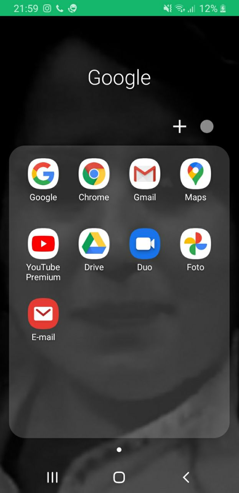

Applicazioni preinstallate
- YouTube
- Google
- Chrome
- Calendario
- Calcolatrice
- Google Map
Youtube serve per vedere i video e ascoltare la musica di qualunque genere.
Google è un assistente che si usa molto spesso chiamandolo con la nostra voce e dicendo "OK GOOGLE".
google ti può aiutare in tante cose come ad esempio nel cercare informazioni importanti per la scuola,
oppure riproduce musica, imposta i timer, gestisce chiamate e messaggi ecc.
Google Chrome è stato creato il 2 settembre 2008 e sarebbe un browser web sviluppato proprio da google
Il calendario serve solo a ricordare che giorno è oggi,se ci sono feste importanti nei prossimi giorni.
La calcolatrice serve per quando non hai a portata di mano una calcolatrice fisica e usi quella del
telefono che è anche scientfica.
Google Map serve per il navigatore quando devi andare in un luogo o sei in una città che non conosci.
Queste sono tutte applicazioni preinstallate e che non possono essere cancellate
